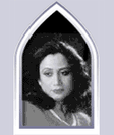
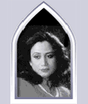

|  |  |
|
PARVEEN SHAKIR (1952-1994) was a civil servant with Pakistan Customs, a noted poet, and a recipient of many literary awards. She spent the 1990-91 academic year as a Fulbright Consortium Scholar at St. Joseph's College and Trinity College, Hartford, Connecticut. Khushbu, her first collection of poems, consists of both ghazals and nazms. Sadbarg, Khud-Kalaami, Inkaar, and the posthumous Kaf-e Aa'eena are her other collections of poetry. |
|  | |